Eleven openings for the homepage
Explore five earlier directions, five reference designs and a Fresh Bento alternative. Photo credits
-

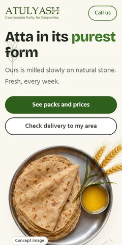
Fresh photo collage
1. Rasoi Collage
Bright and fresh, like a grocery app. A round plate of rotis, leaves breaking past the edges, a PIN check up top.
Open Rasoi Collage -


Fresh produce shop
2. Morning Market
Freshness first. Warm cream, a big serif headline, the pack in a spread of atta, wheat and rotis, floating fact cards.
Open Morning Market -
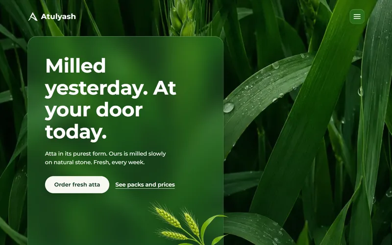

Frosted glass on a wheat wall
3. Glass Field
A dark wall of young wheat behind the page. Each section is one big frosted green card, with a wheat sprig, Veer or the pack breaking out of its edge.
Open Glass Field -
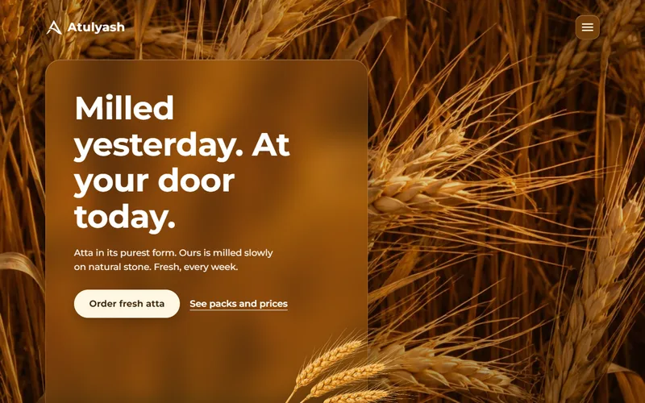
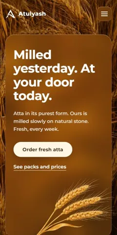
Frosted glass on ripe wheat
4. Golden Glass
Glass Field at harvest time. A dark wall of ripe golden wheat behind amber frosted cards, with a golden sprig, Veer and the pack breaking out.
Open Golden Glass -
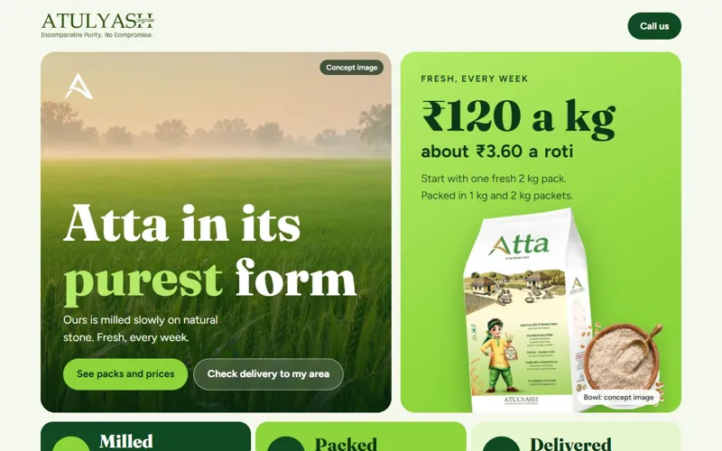
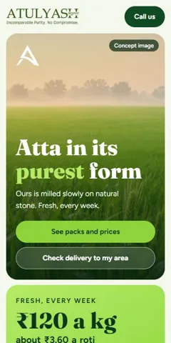
Your green bento brief
5. Fresh Bento
Bright lime and deep green cards. A young wheat field, the pack and price, Day 1 to Day 2, our riders and Veer.
Open Fresh Bento -
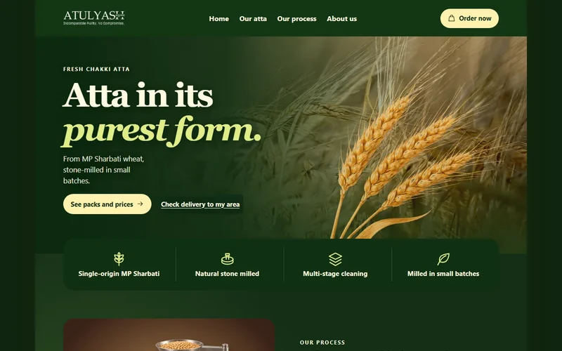
6. Wheat Afterglow
Dark wheat field, a warm milling feature and a compact shelf.
Open Wheat Afterglow -
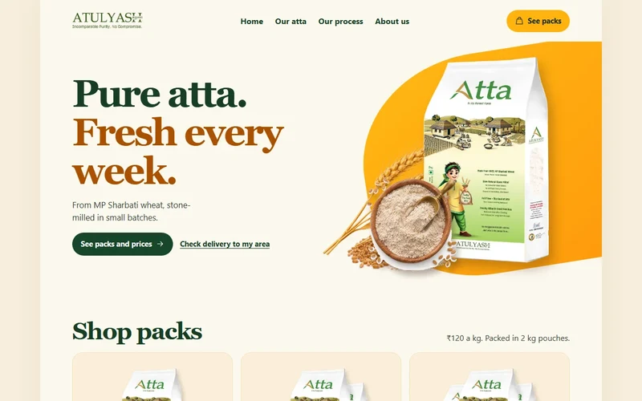
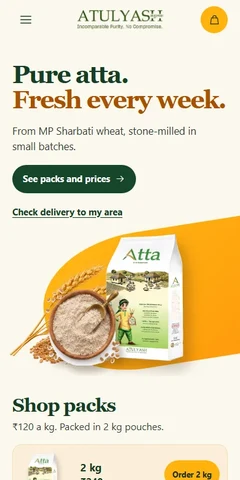
7. Saffron Market
Cream and saffron, with the pouch up front and a market-style pack grid.
Open Saffron Market -
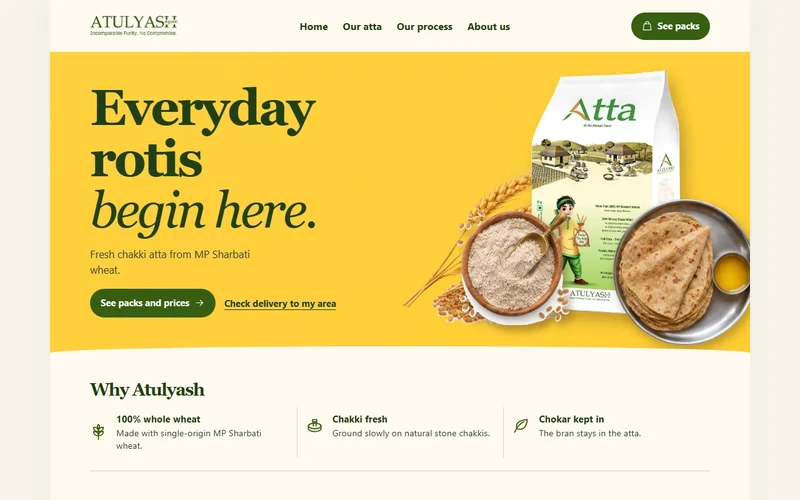
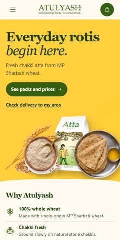
8. Golden Kitchen
A golden hero, kitchen films and an everyday-meals photo mosaic.
Open Golden Kitchen -
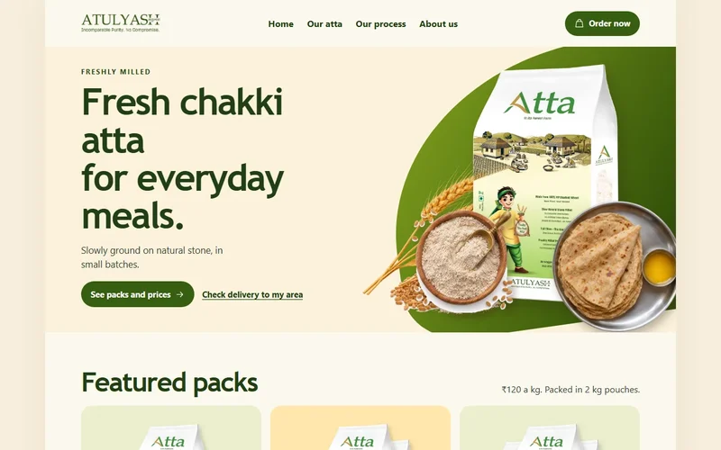
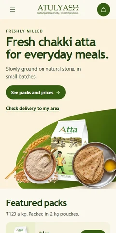
9. Harvest Grove
A green sweep, featured packs and a collage of wheat, milling and rotis.
Open Harvest Grove -
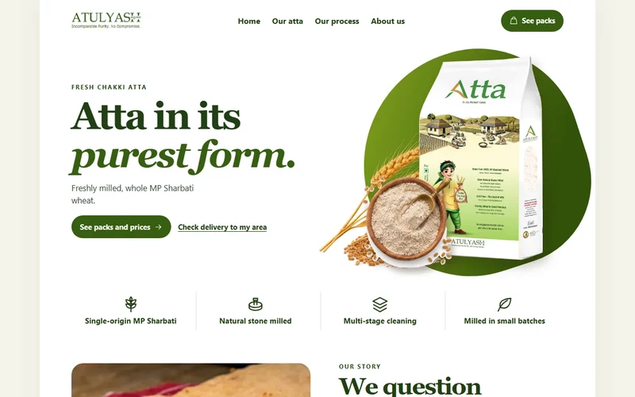
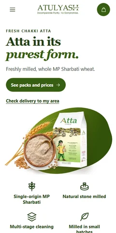
10. Pure and Simple
A clean white opening, roti photography and the three delivery steps.
Open Pure and Simple 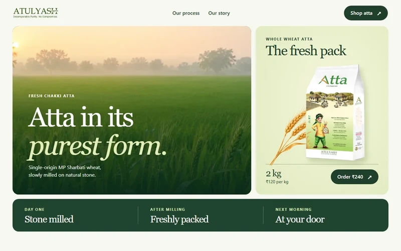
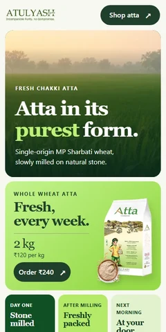
11. Fresh Bento Alt
A morning wheat field, a pale green pack card and a milling timeline.
Open Fresh Bento Alt